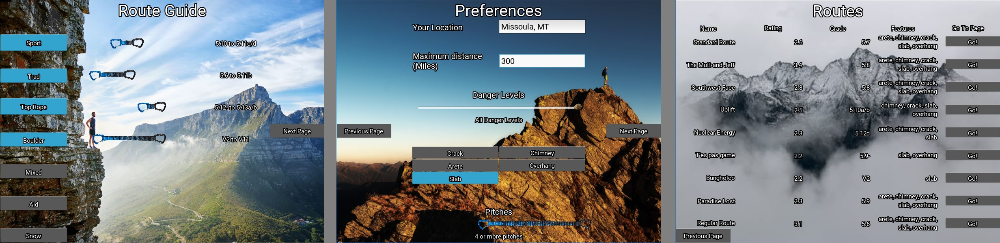
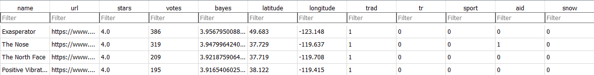
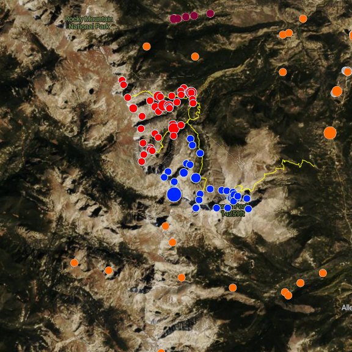
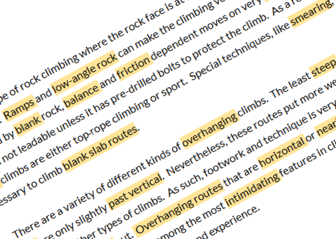
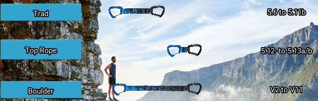
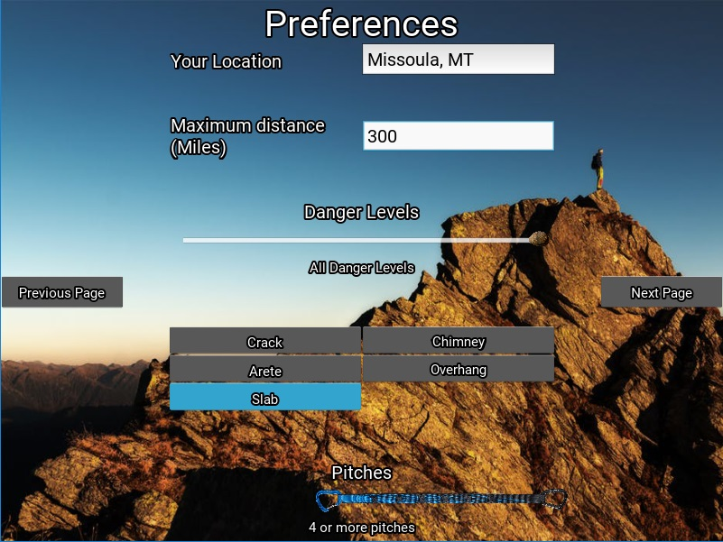

Mountain Project Route Finder
The ultimate purpose of the program is to help users optimize their time by finding climbing areas based on their preferences.
By combining metrics such as distance to user, type/difficulty of routes, and concentration of routes, we can find where climbers can make best use of their time. MP lets users search by a variety of different metrics, including route quality, number of pitches, route type, and difficulty, as well as by geographic location. This approach has limitations. This program not only improves upon some of these metrics, such as the way that route quality is measured, but also adds new functionality.
Web Scraper
The first step of the process is to create a database of route information. Mountain Project is organized into areas and routes, with most of the important information on the routes page. I still had to keep track of which routes were in which areas, so I created an SQL database with one table for route level pages and another for area level pages.
Routes are obviously what I was mostly interested in, so I grabbed the name, url, rating, location, type of climb, grade of climb, and length for each route, then gave each a unique id.
Since climbing ratings are different depending on the type of climbing and the location, I also converted the ratings into a linear system, 0 being the easiest rating for a style and moving up as the routes got harder. For example, there are 77 different possible Yosemite Decimal System (YDS) ratings on Mountain project, so the easiest would be a 0 and the hardest a 76.
At this stage, I also preprocessed the text for each route. Each route has a name, most have descriptions, and some have user comments. I wanted to try to categorize routes based on the type of terrain by looking at this text, something that Mountain Project doesn’t do yet. To get the text ready to analyze, I combined these three sources of user-input into one block of text, then standardized and tokenized it, removed stop words, and ran it through a Porter stemmer. I held all of the words and the id of the route they pertained to in another table of my database.
Bayesian Rating System
After scraping the routes I needed, I analyzed the data. I wanted to improve the way route quality was measured, as the current star-system ust gave each route its average rating. I decided to use Bayesian statistics to get a more accurate measure.
The drawbacks of using the simple average are that highly rated routes with only a few ratings tend to appear higher than they should and routes with no user-ratings are shunted to the bottom of the list.
My Bayesian rating system helps to mitigate these effects. The weighted rating works by first finding the average rating for all routes and adding a number of “phantom voters” who all rate the route as average. For routes with only a few ratings, the effect is to dramatically revert towards the mean, but as more people rate it, this effect lessens.
Clustering
By clustering routes based on geographic area and similarity of styles, this program helps to promote routes that are near other routes similar to them. This helps by ignoring routes that are exactly what you want - but 50 miles from any other route you might want to do.
I used the Density Based Scan clustering algorithm to weight routes that are near other similar ones. The algorithm works by grouping points together in space based on upper-limits of distance and minimum numbers of members of a cluster. This helps by ignoring routes that are exactly what you want but 50 miles from any other route you might want to do.
Terrain
Climbers often have a type of route - e.g. overhangs, slab, cracks - that they like more than others. Using natural language processing of route descriptions and comments, this program attempts to categorize each climb into one or more of these terrain styles.
I looked for five route features in the text: aretes, chimneys, cracks, slab, and overhangs. These features can help users further refine the type of route they want, and is factored in when clustering.
Route names, descriptions, and user comments can indicate the presence of route features. I used Term-Frequency-Inverse-Document-Frequency (TFIDF) values for the blocks of text gathered for each route, which can be compared to 'archetypal' routes to glean insight into these features.
TFIDF values essentially find important words in blocks of text, and allow you to compare it to a query, in this case a description of a generic route feature.This comparison is further clarified using Bayesian statistics to measure the credibility of the comparison, and is then adjusted to reflect that.
Styles
MP's search function only allows users to search by one climbing style at a time - bouldering, sport, etc. This program allows users to select any number of routes that they like, and finds the best areas that have any of these styles.
For example, I may enjoy sport climbing and bouldering, and would want to find nearby areas that have either. Additionally, in general the grade people can climb changes depending on the type of route, and this function allows users to specify grade in a style-specific way.
User Interface
I created a simple and elegant user-interface that lets users select routes with as much precision as they want. The best routes are spit out with links to the Mountain Project page, using all of the above metrics to create a composite score.
